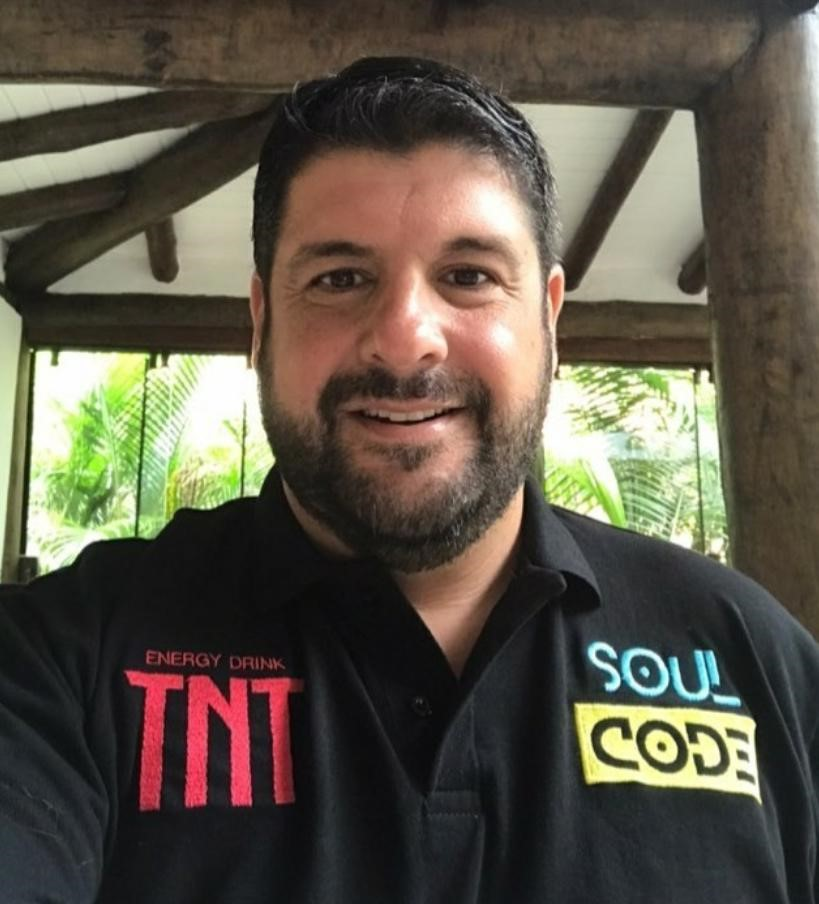
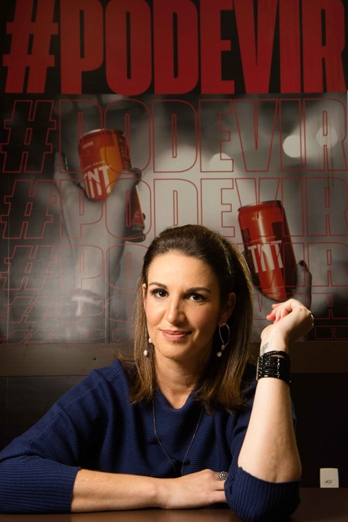

Soul Code Academy é nova escola de programação brasileira
O crescimento de startups no Brasil e a digitalização das empresas escancararam a falta de profissionais com conhecimento tecnológico para atuar no setor
Pensando nesse cenário, e na necessidade de trazer maior inclusão e impacto social ao setor, foi concebida a Soul Code Academy, nova escola de programação que chega ao mercado para formar e capacitar desenvolvedores web full stack com cursos gratuitos e digitais.
Como parte do modelo de negócio da empresa, há ainda a oferta de cursos de programação para empresas, que podem formar turmas entre funcionários para gerar especializações conforme a necessidade digital e de transformação tecnológica.

Curso gratuito de capacitação em programação
A empresa foi fundada por Fabrício Cardoso, ex-diretor da Kenshoo, uma startup israelense de marketing digital, com passagens por IBM, Microsoft e Oracle e Juana Pinkalsky, profissional com 16 anos de Oracle, na qual começou como trainee e chegou a liderar o Oracle Academy, área de educação da Oracle.
"A TNT Energy Drink é uma marca que acompanha as novidades e tendências do nosso público. Vimos uma ótima oportunidade no setor de tecnologia, e a parceria com a SoulCode Academy veio em um ótimo momento. Poder contribuir com educação social, conhecimento, criatividade e inovação é mais um caminho que buscamos", explica Eliana Cassandre, head de marketing do energético.
Com metodologia própria, baseada no conceito global "Tech for Good", o curso da SoulCode Academy tem turmas reduzidas de no máximo 30 alunos, divididos entre homens e mulheres de diversas idades, com aulas online, em português e ao vivo. Além da capacitação técnica, também serão desenvolvidos aspectos comportamentais. As aulas têm duração de 16 semanas, com aproximadamente 700 horas de aulas teóricas e práticas.

TNT Energy Drink patrocina curso gratuito de capacitação em programação com metodologia própria.
Sempre ligada às tendências, a TNT Energy Drink se juntou a SoulCode Academy para oferecer cursos gratuitos de programação e inclusão digital. O energético está patrocinando todas as turmas de 2021 da nova edtech brasileira, que tem como foco gerar impacto social, com empregabilidade através da capacitação tecnológica. A primeira turma patrocinada pela TNT Energy Drink teve início no dia 26 janeiro deste ano e as inscrições para a próxima turma serão abertas nos próximos dias. Estão previstos para este ano, no mínimo, seis bootcamps, podendo chegar a nove.
Desde o ano passado, a TNT Energy Drink incluiu a tecnologia como um dos pilares da marca e vem investindo em parcerias no setor para levar informação de qualidade aos seus consumidores. Em crescimento, a área de desenvolvimento vai requerer, até 2024, uma demanda média de 70 mil profissionais por ano, segundo dados da Associação Brasileira das Empresas de Tecnologia da Informação e Comunicação (Brasscom).